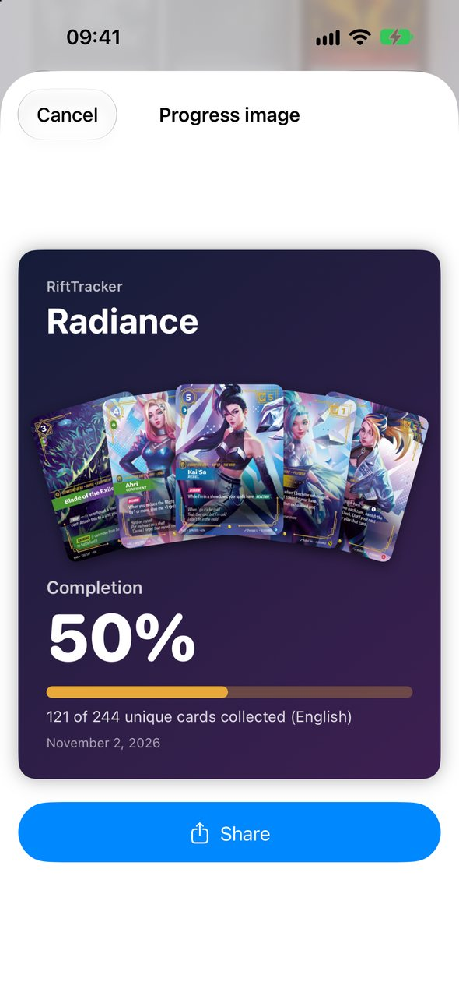

What it does
Everything a collector needs, nothing else. No account, no ads, no data leaving your phone.
Set completion
See how many cards of each set you own, in the language you collect. An optional master set mode counts standard and foil versions separately.
Binder view
Browse a set page by page, 3 × 3 like a real binder: owned cards in full color, missing ones as silhouettes.
Collection value
Market prices from Cardmarket and TCGplayer, the total value of your collection and this week's biggest gains and losses.
On-device scanner
Point the camera at a card to find it. Recognition runs entirely on the iPhone with Apple Vision. Batch mode adds a whole stack in one go.
Share your progress
Generate a clean image of a set's completion with your best cards, ready for social media.
English and French
Interface and collection language in English or French, with backup and restore of your collection (JSON, CSV).
Screenshots
Captured from the current development build.




How it works
The typical user flow.
- On first launch, the app downloads the Riftbound card catalog, then works offline.
- The player opens a set and adds the cards they own, from the list, the binder, the search or the camera scanner.
- For each card they choose the version (standard or foil), condition, language and quantity.
- The app shows completion per set, the value of the collection and the week's price changes.
- The player can share a progress image or export a backup of their collection.
Data and privacy
What stays on the iPhone
- The whole collection, stored locally.
- Camera frames and card recognition: processed on the device, never uploaded.
- No account, no analytics, no advertising identifiers.
What the app downloads
- Riftbound card catalog, official card art and text (moving to the official Riot Games API).
- Market prices, at most once a day, cached on the device.
- The app never redistributes this data to third parties.
Read the full privacy policy.